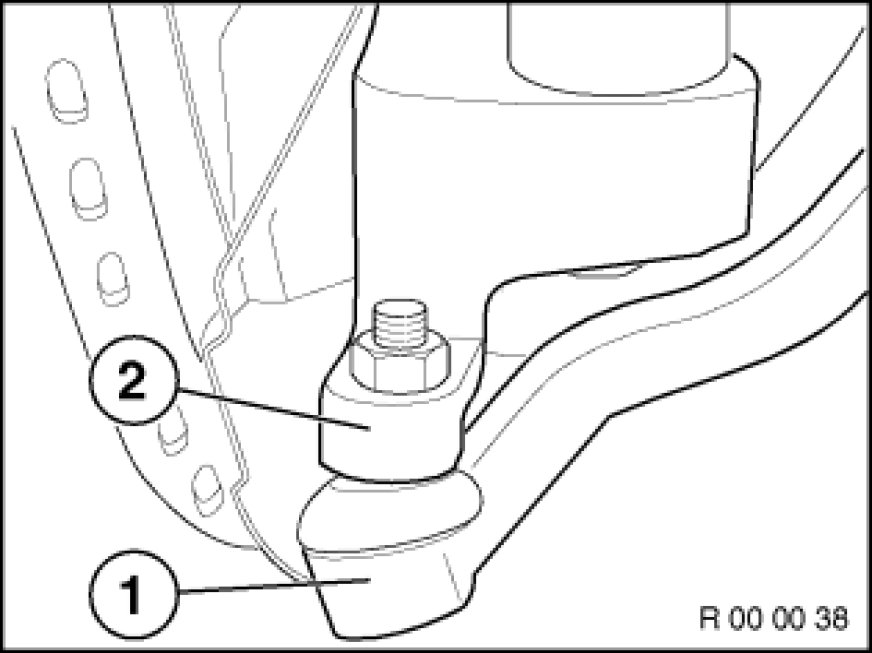
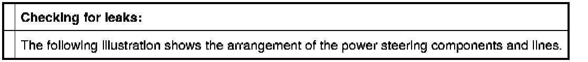
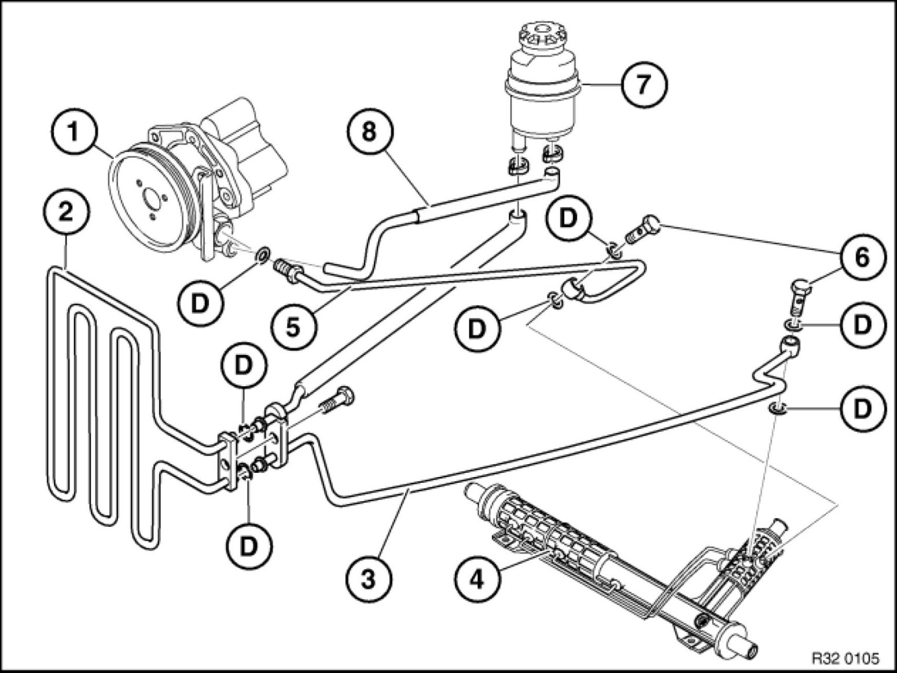
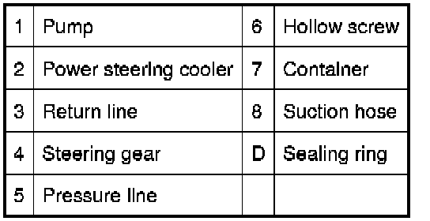

Steering Components - Checking for Zero Clearance, Leaks, Damage and Wear
00 00 ... - Steering components: checking for zero clearance, leaks, damage and wear

Checking play:
- Steering wheel:
Move steering wheel back and forth and check for play
- Tie rod joint:
There must no clearance between tie rod arm (2) and tie rod joint (1).




Check all visible connections, hoses, lines and steering gear for traces of fluid.
Checking for damage and wear:
Check gaiters, flexible disc and axle and tie rod sleeves for damage (e.g. cracks, holes), for leaks or missing clamping bands on gaiters.